User-defined GDB commands on iOS
In this post we will discuss user-defined GDB commands on iOS. We will talk about some really simple things and play with “toy” examples. Hovewer, it is assumed that the reader is not a 100% noob. He (or she) should be familiar GDB on iOS and should has basic knowledge of Objective C runtime (all that classes, class instances, properties… well, you know :)).
All examples were tested for GDB 6.3.50-20050815 (Apple version gdb-1821) running on a jailbroken iPhone 4 with iOS 6.1.3. Probably they will work with other versions of GDB and iOS as well. Also, please note that GDB for iOS is not the most stable debugger ever created. So if you are sure that your user-defined command is okay, but it doesn’t work, just restart GDB and try again. Sometimes it helps :)
Hello, World!
Let’s start with a simple user-defined command hello_world. First we should connect a jailbroken iPhone with our favorite SSH client (I like Putty, so we’ll see it on all screenshots in this post :)). Then we should start GDB and attach it to a running process. Now if we type in GDB console
(gdb) define hello_world
we should see the following prompt:
Type commands for definition of "hello_world".
End with a line saying just "end".
>
It’s time to type our first user-defined command:
> printf "Hello, World!\n"
> end
It’s done! To run the command, we should just type
(gdb) hello_world
The result of execution will look like
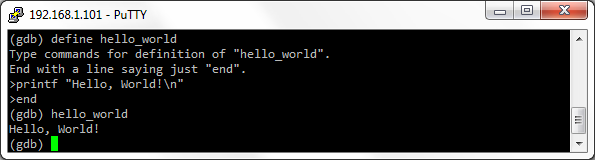
Please note that a name of a user-defined command is not case sensitive. It contains alphabetical characters, digits, _ and -. Spaces and characters like +*/@#!?$&()= are forbidden.
Help for a user-defined command
Ok, we’ve wrote the hello_world command. Now let’s document it. If we type in GDB console
(gdb) document hello_world
we should see the following prompt:
Type documentation for "hello_world".
End with a line saying just "end".
>
Let’s type a description of the hello_world command, e.g.
> The hello_world command just prints Hello, World!
> That's all :)
> end
To show the help, just type in GDB console:
(gdb) help hello_world
The result should look like
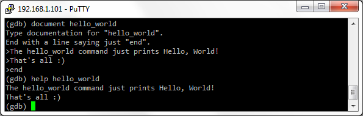
Please note that it is not possible to document an undefined command. If we want to document a user-defined command, we should define it with define keyword first.
Execute a user-defined command from a script file
Now let’s put the hello_world command to a file and call it as a script. For this purpose, let’s open any text editor that can save files in plain text format, and type the commands and comments (comments start with the hash character, #, and extend to the end of the line):
###########################################################################
# This is just a useless example of
# a user-defined command in a script
# file helloworld.gdbs
###########################################################################
# The command
define hello_world
printf "Hello, World!\n"
end
# The help
document hello_world
The hello_world command just prints Hello, World!
That's all :)
end
Save the text to a plain text file named helloworld.gdbs in a local folder on PC, then copy the file to any folder on the iPhone, e.g. /usr/bin/. To load the helloworld.gdbs script, just type in GDB console:
(gdb) source /usr/bin/helloworld.gdbs
That’s it! Now if we try to execute hello_world and help hello_world, we will see something similar to
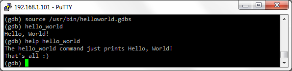
Please note that the the script file name and .gdbs extension (GDB script) was chosen arbitrary. In fact, we could choose any file name and extension, e.g. hello-world.gdscr (GDB script) or even hw1234.mcs (my cool script :)). Anyway, GDB doesn’t care.
Also, please note that the script file should not contain tabs. If we want to use indents to keep code readable, we should use spaces, not tabs:
# The command
define hello_world
printf "Hello, World!\n"
end
Running user-defined commands on breakpoints
It is possible to run a user defined command on a breakpoint as well as any other regular GDB command. Just use commands. For example, to run help hello_world on a breakpoint on [NSURLConnection start], we should type in a GDB console:
(gdb) break -[NSURLConnection start]
Then type
(gdb) commands
and, after the prompt,
Type commands for when breakpoint 1 is hit, one per line.
End with a line saying just "end".
>
type the commands
> hello_world
> end
Continue execution with c. As soon as [NSURLConnection start] is invoked, we’ll see “Hello, World!”:
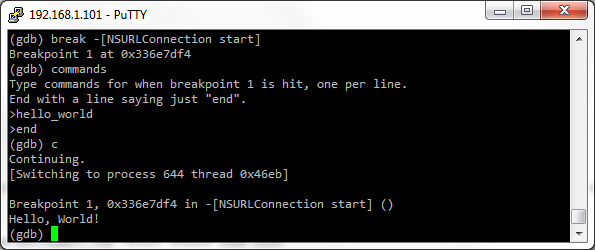
Variables
We’ll say “define” many times in this section. This is because we will consider how to define and use variables in user-defined commands :) The variable should be defined with set statement and should start with $, for example:
define hello_with_variable
set $hello_world="Hello, World!\n"
printf "%s", $hello_world
end
Here is how it looks in GDB console:
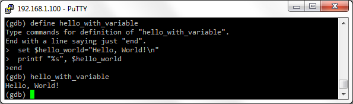
Note that the value of a non initialized variable is void. For example, let’s define a command which prints the non initialized variable $a.
define print_non_init_var
print $a
end
If we execute the command, we will see something like:
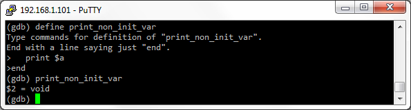
Also please note that all variables in user-defined commands behavior like global variables during debugging session (the only exception is arguments, see the sections below for details). Let’s consider a toy example with two user-defined commands:
define set_i_to_12345
set $i=12345
printf "$i set to %u\n", $i
end
define print_i
printf "Now $i is %u\n", $i
end
Execute print_i after set_i_to_12345, and we’ll see
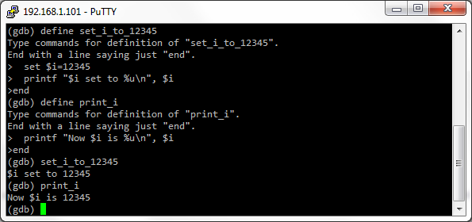
I.e. the variable $i, defined inside set_i_to_12345, is visible for other user-defined commands. Moreover, the variable can be modified by other user-defined commands. Let’s define another user-defined command
define change_i_to_5678
set $i=5678
printf "$i is set to %u\n", $i
end
and execute it. The value of the variable $i will be changed to 5678:

Arguments
Arguments of a user-defined command are variables $arg0, $arg1, $arg2 etc. For example,
define print_string
printf "%s\n", $arg0
end
Now we can pass a string as an argument to print_string and the command will print the string:
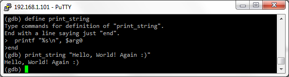
If we pass no arguments, we’ll get an error message:
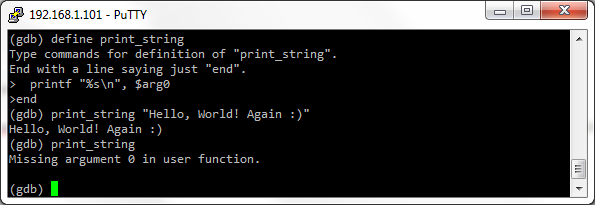
To avoid the error, we should check the variable $argc somewhere inside our user-defined command with if...else statement (please find more about conditional execution in the next sections):
define smart_print_string
if $argc==1
printf "%s\n", $arg0
else
printf "How to use:\nsmart_print_string <string to print>\n"
end
end
As you probably already guess, the variable $argc contains the count of arguments passed to the user-defined command. If we execute smart_print_string without arguments, we’ll get
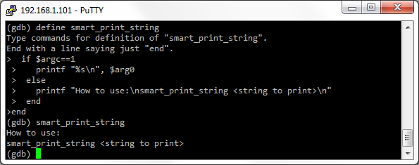
Please note that arguments are the only local variables in a user-defined command.
Objective C runtime structures as arguments
A really cool thing is we can pass Objective C runtime structures (classes, class instances, properties etc; in fact, all these objects are just C structures in memory) as parameters to a user-defined command. For example, let r0 contains a pointer to an instance of a class, and we want to know the name of the class. Let’s define the following command:
define what_is_class_name
po $arg0
end
If we run the command and pass the pointer to an instance of a class (in r0), the command will print the class name and the instance address (we use po command to output information about the class instance to GDB console):
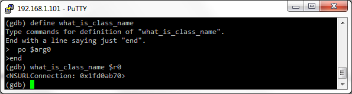
You probably know that we can access Objective C runtime structures with square brackets []. Unfortunately, we can’t pass something in square brackets directly to the a user-defined command. For example, if r0 points to an instance of NSURLConnection, we can’t just execute
(gdb) what_is_class_name [$r0 currentRequest]
to get the information about the property currentRequest:

A possible solution is to define a new variable, which points to the property currentRequest, and pass it into the user-defined command. However if we try to do it without typecasting, we will get another error:
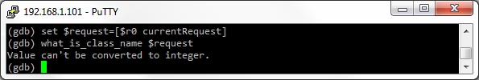
We should cast the pointer to int, and then pass the variable to the user-defined command:
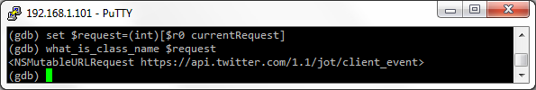
Another way is putting [$r0 currentRequest] to a variable and cast it to int inside our user-defined command:
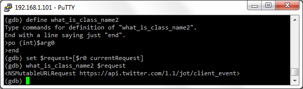
I know, it looks weird because the type of currentRequest is definitely not int, however we need to cast it to int. We will not discuss the reasons, sorry. Just take it as the rule :)
Passing variables to Objective C methods
We can pass variables and arguments (because arguments are variables too) to Objective C methods as parameters. For example, consider the following user-defined command:
define key_value_element
po [[$arg0 allKeys] objectAtIndex:$arg1]
po [[$arg0 allValues] objectAtIndex:$arg1]
end
The command prints a key/value pair from NSDictionary. It takes a pointer to NSDictionary instance (in $arg0) and the number of the key/value pair to print (in $arg1). Then $arg1 is passed as a parameter to objectAtIndex method to get objects for the key and value. For example, if r0 points to an instance of NSURLConnection, we can use the command to print the second HTTP header key/value pair:
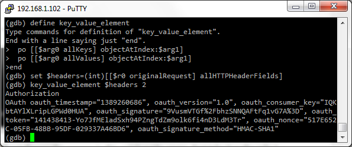
Please, pay attention that we can’t pass [[$r0 originalRequest] allHTTPHeaderFields] directly to the key_value_element command (see the previous section for details). First we have to cast it to int and wrap into a variable:
(gdb) set $headers=(int)[[$r0 originalRequest] allHTTPHeaderFields]
Passing variables to C functions
We can pass variables and arguments (because arguments are variables too) to Objective C methods as parameters. Here is an example user-defined command:
define string_length
set $length = (int)strlen((char*)$arg0)
printf "The length is %u\n", $length
end
Please, note that we have cast $arg0 to char* and cast the returned value to int. This is a very important point! Calling C functions, we should cast function parameters and a returned value to primitive types as char*, int etc. Here is an example of how string_length works:
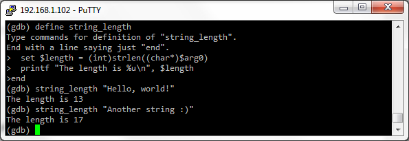
Conditional execution
To execute something conditionally in a user-defined command, we should use if...else statements. The syntax is simple:
if _<condition>_
_...do something here..._
else
_...do something else here..._
end
or (without else):
if _<condition>_
_...do something here..._
end
If we have read the previous sections, we probably already saw the following example:
define smart_print_string
if $argc==1
printf "%s\n", $arg0
else
printf "How to use:\nsmart_print_string <string to print>\n"
end
end
The condition in the example above is simple: we just check if the variable $argc is equal to 1. We can use more complex conditions with almost all logical operations known from C/C++: == (is equal to), != (is not equal to), && (and), || (or) etc. The syntax is exactly as in C/C++.
Also we can use nested if...else statements:
define smart_print_string
if $argc==1
if $arg0!=0
printf "%s\n", $arg0
else
printf "You have passed a zero pointer!\n"
end
else
printf "How to use:\nsmart_print_string <string to print>\n"
end
end
It works as follows
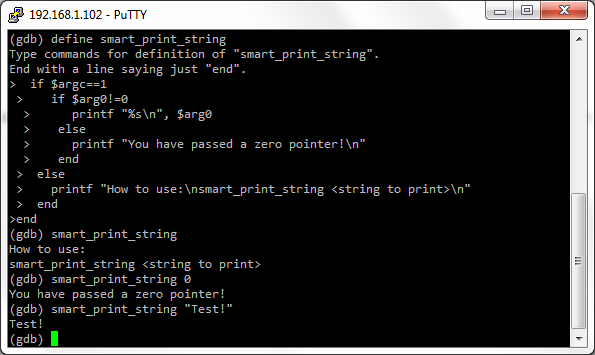
Moreover, sometimes we must use nested if...else statements. Let’s try to “optimize” the code of smart_print_string command. Remove the nested if...else statement and put both checks ($argc==1 and $arg0!=0) to a single condition:
define smart_print_string_optimized
if $argc==1 && $arg0!=0
printf "%s\n", $arg0
else
printf "How to use:\nsmart_print_string <string to print>\n"
printf "where <string to print> is not a zero pointer!\n"
end
end
Looks better, yeah? But if we try to run the command without arguments…
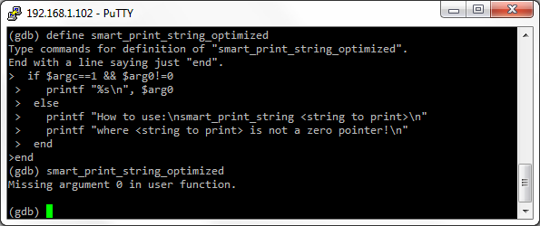
We got the error “Missing argument 0 in user function” because GDB parsed the condition $argc==1 && $arg0!=0 as follows:
- First GDB checked
$argc==1, it wasfalsebecause we did no pass any arguments to the command. - It was not necessary to check
$arg0!=0. Indeed, if$argc==1isfalse, then$argc==1 && $arg0!=0isfalsein any case. However, GDB checked$arg0!=0anyway. Of course,$arg0was not defined (remember? we did not pass any arguments), so GDB printed the error message.
We should always keep in mind that GDB continue checking condition even it makes no sense (like in the example above).
Loops
The loop statement is while:
while _<condition>_
_...do something here..._
end
Nested loops are allowed. The rules for conditions are the same as for if...else (see the previous section for details). It is important to set correct conditions for while, otherwise we can run into infinite loop. E.g. the following loop will never end:
set $i = 1
while $i<10
printf "What? I do not increment $i inside the loop?\n"
printf "Oh sh... Stop the loop! Let me out!..\n"
end
Here is an example of user-defined command with while statement:
define s_count_a
set $count = 0
set $char = $arg0
while *(char*)$char!=0
if *(char*)$char == 'a'
set $count = $count + 1
end
set $char = $char + 1
end
printf "We saw 'a' %u times\n", $count
end
The command counts 'a' characters in a string. The string should be passed in $arg0:
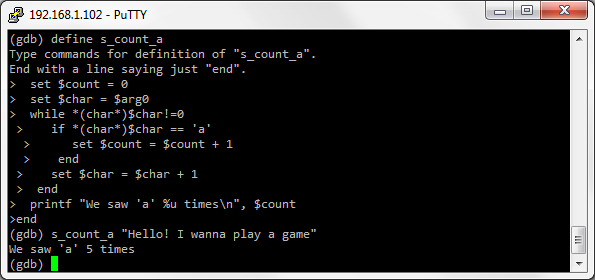
Conditions with C functions and Objective C methods calling
We can use return values from Objective C methods and C functions in expressions for if...else and while. Calling C functions, we should cast parameters and return values to primitive types:
if (int)strcmp((char*)$string1, (char*)$string2) == 0
printf "The strings are equal!\n"
end
We also can wrap the return value with a variable:
set $compare_result = (int)strcmp((char*)$string1, (char*)$string2)
if $compare_result==0
printf "The strings are equal!\n"
end
It is not necessary, but sometimes can make our code more readable.
Here is a complete example of a user-defined command with C function calling in an if...else condition:
define compare_str
if (int)strcmp((char*)$arg0, (char*)$arg1) == 0
printf "The strings are equal!\n"
else
printf "The strings are NOT equal!\n"
end
end
It works like this:
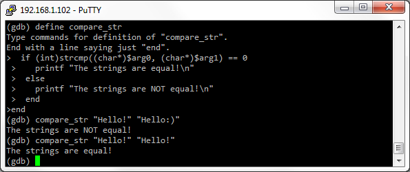
We can also use return values from Objective C methods to build conditions. Here is an example of a user-defined command:
define list_http_headers
set $count = (int)[[[$arg0 currentRequest] allHTTPHeaderFields] count]
set $i = 0
while $i < $count
printf "Header %u:\n", $i+1
po [[[[$arg0 currentRequest] allHTTPHeaderFields] allKeys] objectAtIndex:$i]
po [[[[$arg0 currentRequest] allHTTPHeaderFields] allValues] objectAtIndex:$i]
set $i = $i + 1
end
end
The command takes a pointer to an instance of NSURLConnection (in $arg0) and prints a list of headers of currentRequest. In the example below, the pointer is in r0 register (BTW, it’s a typical situation after break on -[NSURLConnection start]):

Using printf for pretty-looking output
The printf is used to print primitive types like (char*), int etc. In some situation, it allows us to print something really nice and readable :) For example, let’s rework our list_http_headers command. Let it prints pretty-looking pairs
<HTTP header name>: <HTTP header value>
The reworked list_http_headers command may look like
define printf_pretty_http_headers
set $all_headers = (int) [[$arg0 currentRequest] allHTTPHeaderFields]
set $count = (int)[[$request allHTTPHeaderFields] count]
set $i = 0
while $i < $count
set $header = (char*)[[[[$all_headers allKeys] objectAtIndex:$i] description] UTF8String]
set $value = (char*)[[[[$all_headers allValues] objectAtIndex:$i] description] UTF8String]
printf "%s: %s\n", $header, $value
set $i += 1
end
printf "--- Total %u headers ---\n", $count
end
The list_http_headers command used po to print the name/value pairs. So it was enough to pass a return value of objectAtIndex: to po, and - viola! - po prints a string. However, we cant pass a return value of objectAtIndex: to printf, because objectAtIndex: returns not a primitive type, but an object. This is the reason why we should go deeper :) through object’s description to UTF8String, which is a primitive type (it’s a pointer to an array of chars) and can be printed with printf. It works like this:
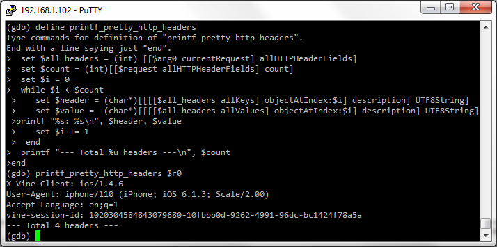
Summary
We can say a lot of things about user-defined GDB commands, but it’s time to finish our discussion :) Finally, here are some pros and cons of user-defined GDB commands. Pros:
- Simple syntax.
- No third-part interpreters (e.g. Python) are needed, no environment customization is required, user-defined commands just work.
Cons:
- All variables are global (excepting arguments), idiotic typecasting, dummy condition checking and other stupid things.
- There is no ability to control GDB engine.
- User-defined commands are slow for even the most trivial tasks (e.g. printing a string). Really.
Useful links
Actually, the only link I found is User-defined Commands.
So it goes.
Wanna say something?
Commenting is not available in this blog, but you can write me a letter or message.